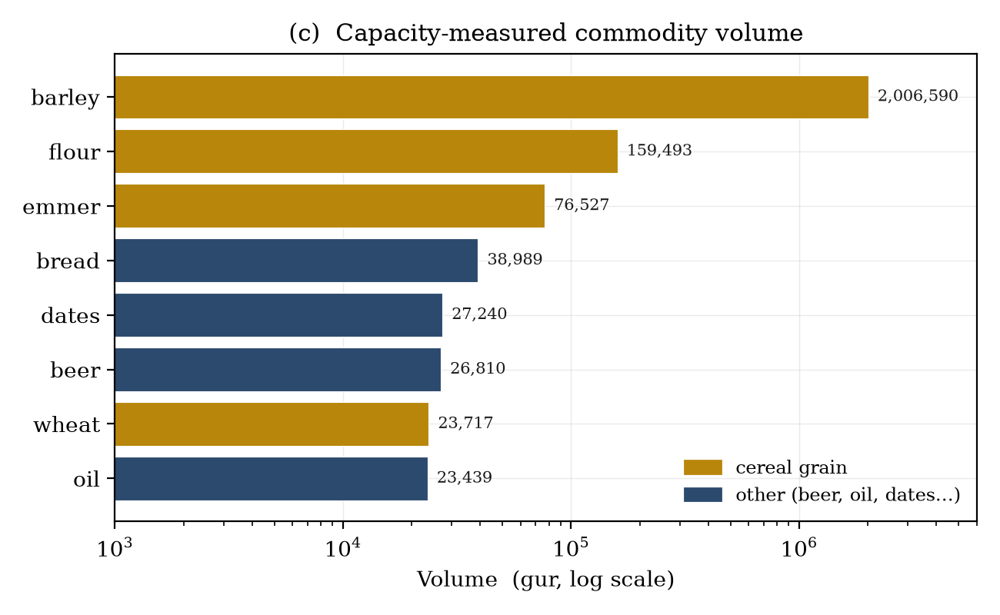
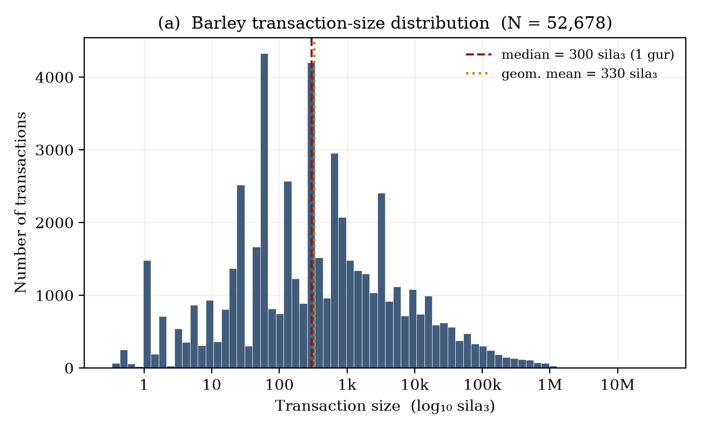
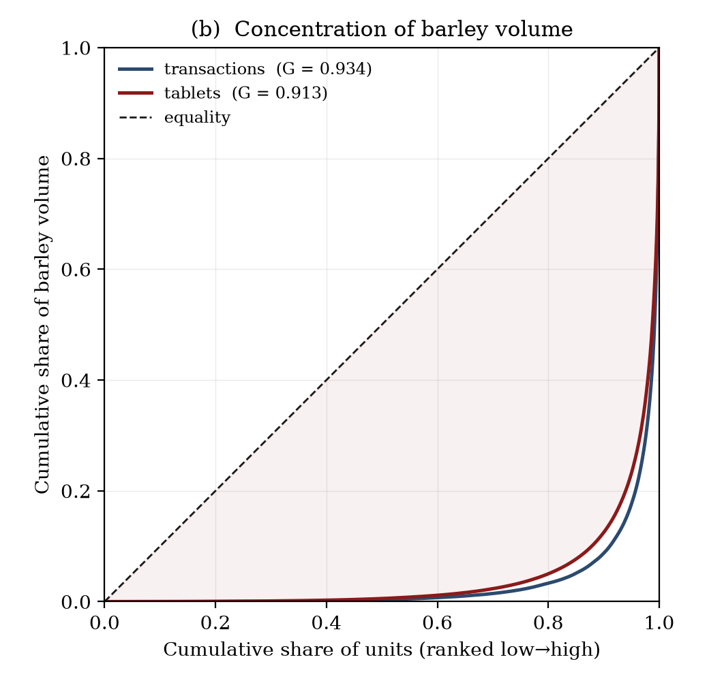
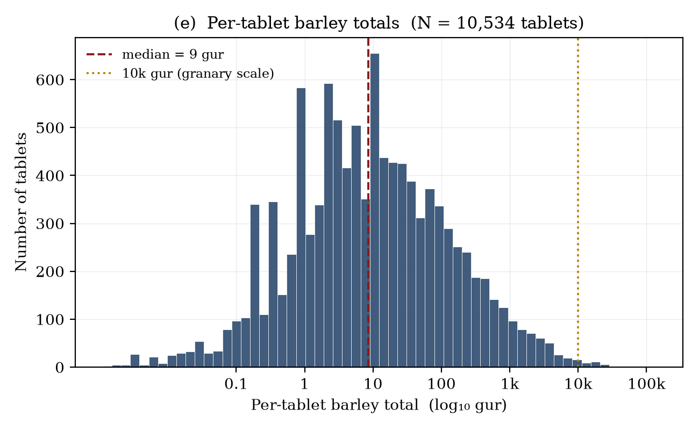
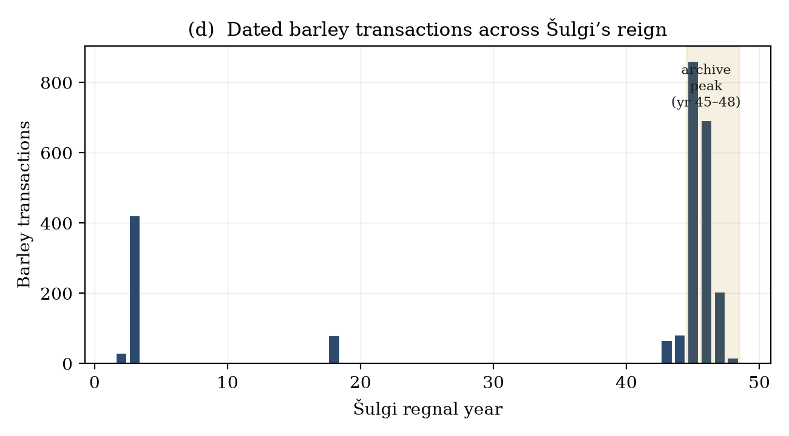
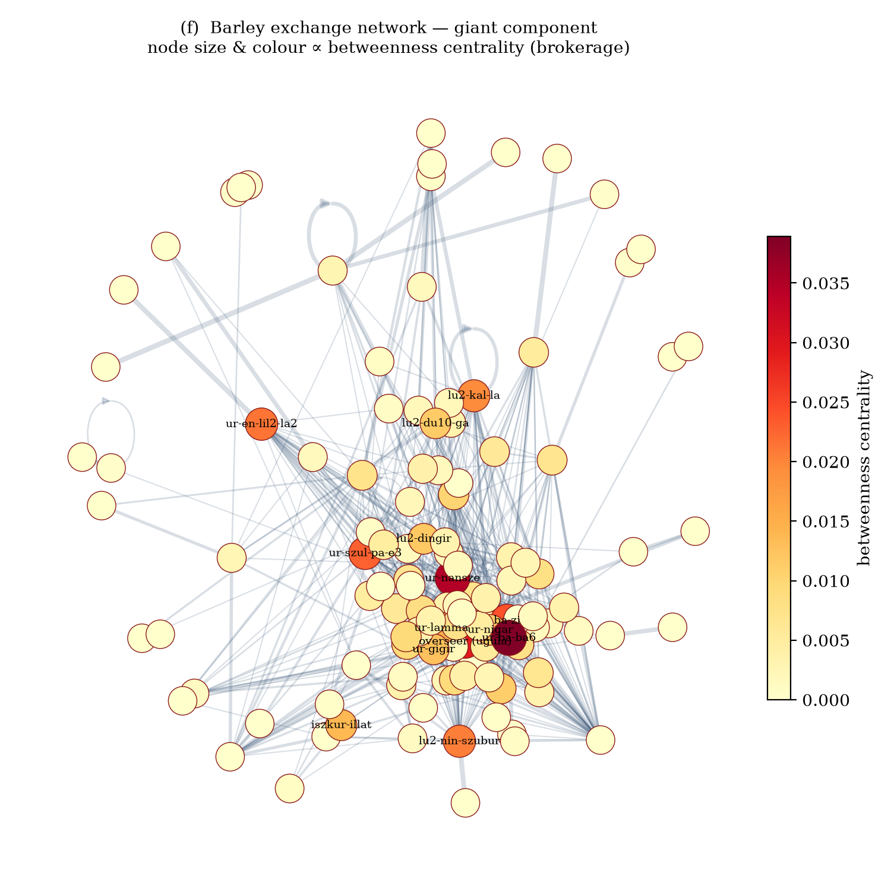

asarodan/sumerThe Third Dynasty of Ur (Ur III, c. 2112–2004 BCE) produced one of the most densely documented administrative economies of the ancient world. We present a deterministic, rule-based pipeline that parses the full Cuneiform Digital Library Initiative (CDLI) bulk export of 135,199 Ur III tablets in transliterated ATF form and extracts 268,976 quantified economic transactions across nine commodity classes, together with a hierarchical record structure (82,866 records, 328,163 line-entries) and a prosopographic index of 56,130 named agents. Converting the Sumerian sexagesimal capacity system to a common unit, the corpus accounts for 2.79 million gur of cereal grain (≈835,000 metric tonnes), of which barley alone constitutes 2.44 million gur. Exploratory data analysis shows that transaction sizes are approximately log-normal in their body (median = 300 sila₃ = 1 gur) with an extreme heavy tail: the largest 1% of transactions carry 55% of all volume, and grain holdings are distributed with a Gini coefficient of 0.94. A barley-flow network of 2,111 agents reveals a single dominant component organised around provincial household managers (šabra) acting as brokers and the royal granary as principal sink. We give particular attention to the methodology of false-positive control: the chief technical difficulty in mass cuneiform extraction is not parsing grain lines but distinguishing them from the orthographically identical lines that record onions, reed bundles, livestock, silver, and balance carry-forwards. We document a corpus of 120 filtering rules, validated by 88 regression tests, that reduced spurious grain volume by roughly 0.96 million gur (26%) relative to a naïve baseline.
The Ur III state bequeathed posterity an administrative habit of almost pathological thoroughness. Scribes recorded the issue of a single sheep, the seed-grain for a field, the beer ration of a messenger, and the annual balance of a granary on small clay tablets, tens of thousands of which survive. The Cuneiform Digital Library Initiative (CDLI) has transliterated this material into the machine-readable ATF (ASCII Transliteration Format) standard, creating an opportunity to study an ancient economy at a transaction-level granularity that is unavailable for any other period before the late medieval era.
Yet the corpus resists naïve quantification. A line such as
2(aš) gur denotes two gur of barley; the
visually parallel 2(aš) sa gi denotes two bundles of reed,
and 2(aš) gu₄ two head of cattle. The same numeral
classifiers, the same sexagesimal place-values, and the same scribal hand
serve grain, garlic, silver, and labour alike. A parser that simply harvests
every numeral followed by a capacity unit over-counts grain by hundreds of
thousands of gur. The central methodological claim of this paper is
that reliable extraction is dominated by the problem of negative
classification—of knowing what is not grain—and that this problem
is tractable with a disciplined, test-driven body of linguistic rules.
We make three contributions. First, a complete and reproducible extraction pipeline (§3) that turns raw ATF into typed, dated, attributed transactions. Second, an exploratory statistical portrait of the Ur III grain economy (§4–§5) covering volume, concentration, temporality, and exchange structure. Third, an explicit account of the false-positive-control methodology (§6) that we believe generalises to other mass-extraction efforts on noisy historical corpora.
Our source is the CDLI bulk ATF export, comprising 135,199 tablets
classified as Ur III. Each tablet is a sequence of transliterated lines
organised by surface (@obverse, @reverse) and column,
with editorial markers for damage ([…]), uncertain readings
(?, !), and determinatives ({d} divine,
{ki} place, {gesz} wood).
Capacity is recorded in the Sumerian sexagesimal grain system. The base unit is the sila₃ (≈1 litre); the principal accounting unit is the gur = 300 sila₃. Larger granary quantities use a nested sexagesimal scaffold (Table 1). Because these tokens multiply the gur by factors up to 216,000, a single mis-classified large-denomination line can inject tens of thousands of phantom gur—a fact that shapes the entire extraction strategy.
| Token | Reading | in gur | in sila₃ | Role |
|---|---|---|---|---|
sila3 | sila₃ | 1/300 | 1 | base (litre) |
ban2 | ban | 1/30 | 10 | sub-gur |
barig | barig | 1/5 | 60 | sub-gur |
asz / gur | gur | 1 | 300 | unit gur |
u | u | 10 | 3,000 | ×10 |
gesz2 | geš | 60 | 18,000 | ×60 |
gesz'u | gešu | 600 | 180,000 | ×600 |
szar2 | šar | 3,600 | 1,080,000 | ×3,600 |
szar'u | šaru | 36,000 | 10,800,000 | ×36,000 |
szargal | šargal | 216,000 | 64,800,000 | ×216,000 |
The pipeline is implemented in pure Python with no machine-learning dependency; every decision is auditable and deterministic. Processing proceeds in five stages.
Each tablet is split into sections at structural keywords—
šunigin (subtotal), sza₃-bi-ta
("therefrom", opening an expenditure block), sag-nig₂-gur₁₁
("capital", opening an income block). Secondary surfaces (@seal,
@envelope) are stripped, and non-administrative genres (lexical
lists, royal inscriptions, literary and non-Sumerian texts) are rejected on
header inspection.
Within a line, the numeral-classifier grammar N(unit) is parsed
and each token mapped through Table 1. Crucially, a line yields a grain quantity
only if it passes the negative-classification filters of §6; otherwise it is
routed to the appropriate non-grain channel (animals in head, silver
in gin₂, labour in worker-days) or discarded.
Issuer, recipient, and intermediary (giri₃, "via") are resolved
from prepositional frames (ki …-ta "from", …
šu ba-ti "received"). Year-names are matched against a
reign-by-reign almanac and reduced to (king, regnal year, month, day).
Personal names are normalised by stripping grammatical case suffixes only
when the bare form is independently attested, guarding against over-merging.
A patronymic scanner (X dumu Y, "X son of Y") yields 7,560
father–son pairs and flags 679 homonyms (identical names with distinct
fathers).
The pipeline emits typed transaction tables, a three-level tablet→record→entry hierarchy, an entity index, and a barley-flow network in GEXF. Summary statistics appear in Table 2.
| Quantity | Value |
|---|---|
| Tablets processed | 135,199 |
| Tablets yielding ≥1 transaction | 50,614 |
| Total transactions extracted | 268,976 |
| Tablets with structured records | 78,483 |
| Records / line-entries | 82,866 / 328,163 |
| Unique named entities | 56,130 |
| Entity appearances | 347,920 |
| Patronymic (kinship) pairs | 7,560 |
| Transactions with a reign date | 89,366 (33.2%) |
Aggregating all capacity-measured transactions and converting to a common gur base yields the commodity profile of Table 3 and Fig. 1c. Cereal grains—barley, emmer, wheat, and the flour milled from them—dominate at 2.79 million gur, with barley alone supplying 56% of all capacity volume. The "untyped" residue (924,000 gur) comprises capacity lines whose commodity word was lost to damage or stood in an elliptical subtotal; on internal evidence the overwhelming majority is also barley, so the cereal figure is a conservative lower bound.
| Commodity | Volume (gur) | Share | Unit basis |
|---|---|---|---|
| Barley | 2,436,483 | 56.0% | capacity |
| (untyped capacity) | 924,284 | 21.3% | capacity |
| Bread (ninda) | 323,659 | 7.4% | capacity-equiv. |
| Flour | 226,443 | 5.2% | capacity |
| Dates | 199,398 | 4.6% | capacity |
| Emmer | 98,617 | 2.3% | capacity |
| Oil (i₃) | 83,457 | 1.9% | capacity |
| Beer (kaš) | 31,213 | 0.7% | capacity-equiv. |
| Wheat | 25,845 | 0.6% | capacity |
| Non-capacity channels: silver 232,757 gin₂ (≈1.94 t); livestock 120,240 head; labour 238,927 worker-days. | |||

The size distribution of the 52,678 barley capacity-transactions spans eight orders of magnitude, from fractional-sila₃ messenger rations to a single 134,007-gur granary receipt. On a logarithmic axis (Fig. 1a) the body of the distribution is strikingly bell-shaped: a log-normal fit gives μ = 5.80, σ = 2.83 (natural log of sila₃), and the modal class sits exactly at the institutional default of one gur (300 sila₃), which is also the median. The geometric mean, 330 sila₃, is two orders of magnitude below the arithmetic mean (13,876 sila₃)—the signature of strong right-skew driven by a small number of granary-scale entries.

Grain volume is concentrated to a degree that would be remarkable in any economy. The Lorenz curves of Fig. 1b yield a Gini coefficient of 0.938 over individual transactions and 0.920 over per-tablet totals. The top 1% of transactions carry 55.1% of all barley by volume, and the top 10% carry 91.9%. This is not an artefact of small-record noise: 53% of grain-bearing tablets record 10 gur or less (everyday disbursements), while just 34 tablets exceed 10,000 gur each—the institutional granary and harvest accounts that dominate the aggregate. The Ur III grain economy was, statistically, a two-regime system: a vast substrate of small rationing transactions overlaid by a thin stratum of enormous institutional flows.


One third of transactions carry a recoverable reign date, overwhelmingly from the reign of Šulgi (71,070 transactions), reflecting the great Drehem, Umma, and Girsu archives. Within Šulgi's reign the dated barley record peaks sharply in years 45–48 (Fig. 1d), the period of the bala redistributive system's fullest documentation. The temporal signal therefore indexes archival survival and bureaucratic intensity rather than any simple economic cycle—an important caveat for any longitudinal reading of the series.

Restricting to barley transactions with both a resolved issuer and recipient (8,621 edges) yields a directed network of 2,111 agents. The graph is sparse (density 0.00076) but cohesive: a single giant weakly-connected component spans 1,732 of the 2,111 nodes (82%), the remaining mass fragmenting into 170 small components. Betweenness centrality (Fig. 1f) identifies the structural brokers, and they are precisely the figures Assyriology would predict: provincial household managers (šabra) and high stewards such as Ur-Baba and Ur-Nanše, who relay grain between cultivators and the central administration. The single largest sink by in-degree is the royal granary (in-degree 82), the institutional terminus toward which provincial surpluses flow. The network thus recovers, from raw transliteration alone, the textbook redistributive architecture of the Ur III state: a hub-and-spoke system mediated by named household officers.

| Rank | Broker (betweenness) | BC | Recipient (in-degree) | deg⁻ |
|---|---|---|---|---|
| 1 | Ur-Baba | 0.040 | royal granary | 82 |
| 2 | Ur-Nanše | 0.037 | Ur-Baba | 44 |
| 3 | overseer (ugula) | 0.026 | Lu-Ninšubur | 41 |
| 4 | Ba-zi | 0.023 | Ur-Nanše | 36 |
| 5 | Ur-Šulpae | 0.022 | overseer (ugula) | 34 |
We now turn to the paper's principal methodological contribution. In a corpus where grain, garlic, reeds, cattle, silver, and accounting balances all share a numeral-classifier grammar, the dominant source of error is not the failure to parse grain (false negatives) but the eager parsing of non-grain (false positives). Because a single large-denomination misread can inject up to 64.8 million sila₃ (Table 1), precision on the tail dominates the aggregate. Our strategy is a layered body of negative-classification rules, each motivated by a specific scribal idiom and each pinned by a regression test.
| Class | Example line | Why it is not grain |
|---|---|---|
| Counted commodities | N(szar2) sa za-ha-din |
bundles of shallots, not gur of grain |
| Fodder / reed | N(gesz2) in-bul5 / in-nu |
thatch & straw measured by bulk, non-cereal |
| Livestock | N(asz) gu₄ / udu |
head of cattle/sheep → routed to head |
| Weight / silver | N(disz) gin₂ ku₃-babbar |
shekels of silver → routed to gin₂ |
| Artisan item-counts | N(gesz2) nig₂ PERSON |
manufactured-object tallies, not capacity |
| Balance carry-forward | N gur su-su / la₂-ia₃ / diri |
repayment/deficit/surplus lines double-count the principal |
| Grand-total restatement | šunigin2 … sag-nig₂-gur₁₁ |
re-states entries already counted within the section |
| Ration mis-scaling | 3(gesz'u) 4(gesz2) 2(u) 3(disz) PERSON |
sila₃-scale worker ration, not gur-scale |
| Archaic curviform | szar2@c, gesz'u@c |
pre-Sargonic sign forms 100–10,000× too large |
The most instructive false positive is the worker-ration list. On
brewer- and weaver-ration tablets, an individual entry such as
3(gesz'u) 4(gesz2) 2(u) 3(disz) ARAD₂ uses the large
sexagesimal tokens to count sila₃, not gur: the entry is
≈7 gur, and the section's closing šunigin performs
the gur conversion. A parser that applies the gur factor to the
gesz'u/gesz2 tokens inflates the line by ×300,
turning 7 gur into 2,063. Our guard encodes the diagnostic linguistic
fact precisely: a line carrying a large-denomination token but no sub-gur
anchor (asz, barig, or ban2) is in
sila₃ scale and must not be promoted to gur scale. Because the sub-gur
anchors are themselves grain indicators, their presence is detected earlier in
the pipeline; their absence beside a gesz2+ token is the
signature of a mis-scaled ration. This single rule removed ≈0.80 million
phantom gur.
Negative filtering, pursued alone, would discard legitimate elliptical grain
lines (e.g. 4(u) 5(disz) PERSON within a proven grain section,
where the unit word is elided). We therefore pair the filters with a
context mechanism: a section that contains at least one explicit grain
line activates a guarded retry that recovers unit-elided lines, but only when
none of the §6.1 disqualifiers is present. The two mechanisms are adversarial by
design—every loosening of recovery is checked against the full false-positive
test suite, and vice versa.
The rule body comprises 120 distinct pattern terms, exercised by 88 regression tests (all passing) that encode both the lines that must parse and the lines that must not. Developed test-first across 86 revisions, the filters reduced spurious grain volume by roughly 0.96 million gur—about 26%—relative to a permissive baseline, while the regression suite guarantees that no documented legitimate line was lost in the process. We regard the test corpus itself, rather than any single rule, as the durable artefact: it freezes hundreds of adjudicated scribal idioms into executable specifications.
Several caveats bound the analysis. (i) Damage. Bracketed lacunae suppress quantities and attributions; coverage is therefore a lower bound, and the 924,000 gur of untyped capacity reflects lost commodity words. (ii) Prosopographic noise. The entity index conflates frequent commodity words (kaš, ninda, udu) with personal names at the head of the frequency table; genuine-person analysis should work from the patronymic-anchored subset. (iii) Survivorship. The temporal and provincial distribution tracks which archives were excavated and published, not the ancient economy's true shape. (iv) Double-counting at the margin. Multi-section balanced accounts that re-state sub-section totals at several levels remain the hardest residual case; we suppress the canonical šunigin/sag-nig₂-gur₁₁ restatements but cannot guarantee zero leakage on idiosyncratic ledgers.
A deterministic, test-driven pipeline can convert 135,199 raw cuneiform transliterations into a quantitatively coherent picture of the Ur III grain economy: 2.79 million gur of cereal moving through a sharply two-regime, Gini-0.94 distribution, organised as a broker-mediated redistributive network terminating at the royal granary. The decisive technical lesson is that mass extraction from such corpora is governed by negative classification—by the disciplined, linguistically-grounded refusal to count what merely looks like grain. The accompanying 88-test regression suite operationalises that discipline and is, we argue, the methodology's most transferable component. Future work will extend context-sensitive recovery to the untyped-capacity residue and apply the same negative-classification framework to the silver and livestock channels.
All extraction code, the 88-test regression suite, and the
derived transaction/record/entity tables are available in the repository
asarodan/sumer. Figures in this paper are regenerated from
output/figures/ by tools/ scripts over the CDLI bulk
ATF export. The CDLI corpus is distributed by the Cuneiform Digital Library
Initiative under its data-sharing terms.
Cuneiform Digital Library Initiative (CDLI). Ur III administrative corpus, ATF bulk export. cdli.mpiwg-berlin.mpg.de.
Englund, R. K. (2012). "Equivalency Values and the Command Economy of the Ur III Period in Mesopotamia." In The Construction of Value in the Ancient World, 427–458.
Garfinkle, S. J. (2015). "Ur III Administrative Texts: Building Blocks of State Community." In From the 21st Century B.C. to the 21st Century A.D.
Molina, M. (2008). "The Corpus of Neo-Sumerian Tablets: An Overview." In The Growth of an Early State in Mesopotamia, 19–53.
Sallaberger, W. (1999). "Ur III-Zeit." In Mesopotamien: Akkade-Zeit und Ur III-Zeit, OBO 160/3, 121–390.
Widell, M. (2004). "Reflections on Some Households and their Receiving Officials in the City of Ur in the Ur III Period." JNES 63, 283–290.
Manuscript compiled from pipeline output · corpus snapshot: 135,199 tablets · 268,976 transactions.